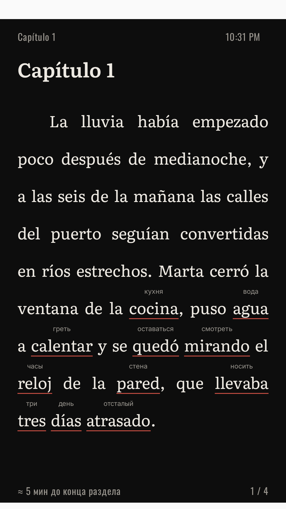
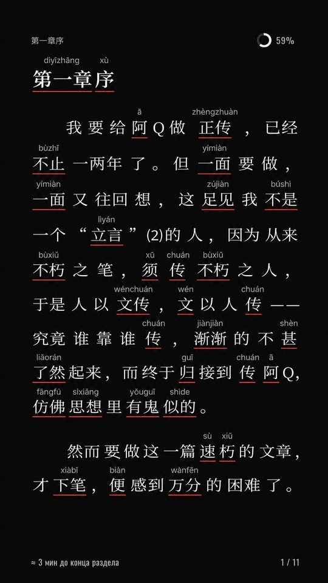

Испанский
hablaban → hablar
Формы слов, выражения и словарные значения. Можно выбрать Испанию или Латинскую Америку для региональных значений. Уровни A1–C2 — приблизительная оценка по частотности.
Испанские, английские и китайские книги — с короткими переводами над словами, словарём по нажатию и карточками из твоего чтения. Для китайского — пиньинь и подсказки чтений.
Тестовая версия 0.26.3 · Android 8 и новее · без рекламы и регистрации
Чтение и словари работают без интернета. DeepSeek и сетевой голос подключаются по желанию.

Выбирай язык в библиотеке. У книг свой язык, а знакомые слова, карточки и прогресс учитываются отдельно.
hablaban → hablar
Формы слов, выражения и словарные значения. Можно выбрать Испанию или Латинскую Америку для региональных значений. Уровни A1–C2 — приблизительная оценка по частотности.
went → go
Исходные формы, сокращения, выражения и произношение IPA в карточке. Приблизительные уровни A1–C2 помогают выбирать слова для изучения.
银行 · yín háng
Разбивка на слова, пиньинь и цвета тонов, упрощённые и традиционные иероглифы. Уровни HSK 2.0 и 3.0, словарные идиомы и грамматические подсказки.
Локальный словарь остаётся основой. По желанию ИИ проверяет его подсказки в читаемом фрагменте и предлагает более подходящий русский смысл.
Контекст сохраняет значение. Например, испанское pista может означать дорожку или улику. Исправление одного употребления не меняет значение во всех книгах. Твои ручные значения всегда имеют приоритет.
Повторное чтение использует локальный кеш. Проверенные значения и исправления сохраняются на телефоне. Неизменённый уже проверенный фрагмент повторно оплачивать не нужно. Есть лимит запросов и счётчик возвращённых API токенов.
ИИ выключен по умолчанию. После включения фрагменты книги передаются DeepSeek напрямую с телефона, а запросы оплачиваются с твоего личного API-баланса. Ключ хранится зашифрованным на устройстве. Подробности — в политике конфиденциальности.
ИИ может ошибаться. Его уверенность не гарантирует правильный перевод. Ключ и лимит общие для трёх языков; отдельные сохранённые контексты не смешиваются. Весь текст книги заранее не отправляется.


Китайские экраны сняты в прежних сборках HanReader; оформление отдельных панелей в Amauta Reader изменилось. Панель DeepSeek на этих снимках не показана.
Актуальная тестовая сборка — 0.26.3. APK можно получить у разработчика:
Если у тебя прежний HanReader: Amauta Reader устанавливается отдельным приложением. Для переноса книг и прогресса сохрани резервную копию в старой читалке и восстанови её в новой. Старый публичный HanReader beta — отдельная китайская версия.
Да. Чтение, локальные словари, карточки и ручные значения работают без DeepSeek. Интернет нужен для ИИ и дополнительного сетевого голоса, если ты их включишь. Синтезатор Android может использовать сеть по собственным настройкам.
Исправление относится к конкретному слову или выражению в конкретном контексте. Базовый словарь сохраняется. Ручное значение важнее ИИ; ошибочное исправление можно отменить.
Книги, места чтения, карточки, прогресс, выделения и ручные значения. Сохранённые ИИ-проверки пока не входят в ручной архив. API-ключ не экспортируется. На своём устройстве ИИ-результаты сохраняются после перезапуска приложения.
Добавлены английский словарь и чтение на трёх языках, ручная и автоматическая контекстная проверка DeepSeek, локальный кеш результатов. Исправлены скачки страниц при обновлении подсказок; в 0.26.3 сохраняются большие интервалы и разделение сцен внутри EPUB.
Нашёл ошибку, хочешь получить сборку или обсудить перевод — напиши. Для ошибки укажи версию приложения, язык книги и действия, после которых она появилась.